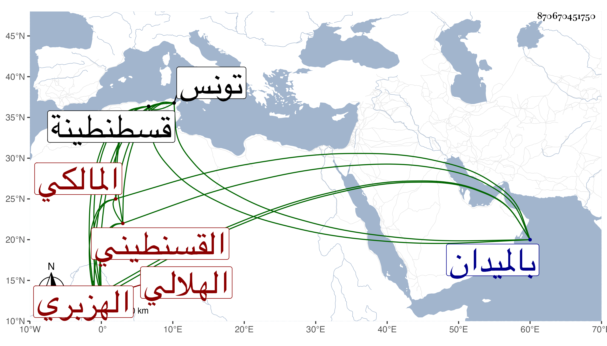

0902Sakhawi.DawLamic.ITO20230111-ara1.EIS1600.870670451750
Biography ID: 870670451750
623
قاسم بن عبد الله بن منصور بن عيسى بن مهدي الهلالي الهزبري بكسر الهاء وفتح الزاي وسكون الموحدة ثم مهملة بطن من هلال بن عامر القسنطيني المالكي . ولد بها في سنة ثمان وثمانين وسبعمائة وقرأ بها القرآن لنافع من طريقيه وأخذ الفقه عن عبد الرحمن الباز ومحمد الزلدوي قاضي قسنطينة ومحمد بن مرزوق ورحل إلى تونس فأخذه عن قاضيها عيسى الغبريني وأبوي القاسم البرزلي والعبدوسي وسمع من لفظه البخاري وقدم علينا حاجا في سنة تسع وأربعين فلقيته بالميدان في جماعة وأجاز لنا . وممن أخذ عنه أحمد بن يونس الماضي . مات .
